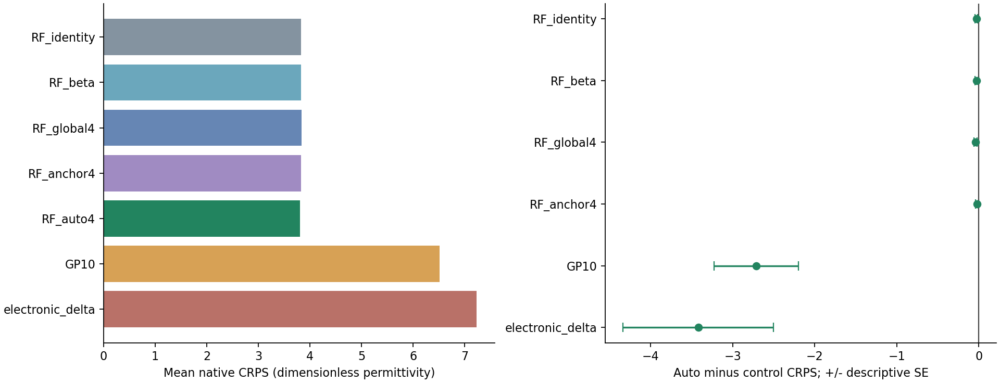
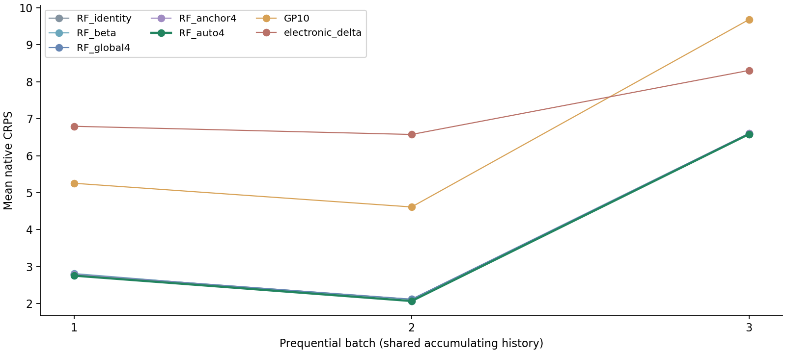
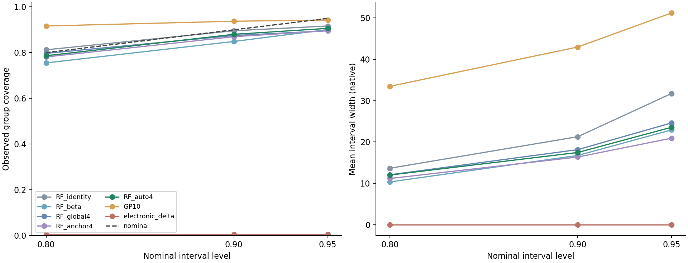

192整组的平均原单位CRPS由完整RF的3.830104降至3.802945，约改善0.7091%。额外收益较小，中位数RMSE未改善，95%区间仍欠覆盖。第三批上下文求解未通过原数值阈值，按已登记协议回到identity，未重跑营救。
| 方法 | 平均CRPS↓ | 中位数RMSE↓ |
|---|---|---|
| RF_identity | 3.830104 | 16.005720 |
| RF_beta | 3.826351 | 16.006013 |
| RF_global4 | 3.839453 | 16.005259 |
| RF_anchor4 | 3.821892 | 16.003503 |
| RF_auto4 | 3.802945 | 16.010914 |
| GP10 | 6.515281 | 21.514312 |
| electronic_delta | 7.223594 | 10.202927 |

F新=Tθ(g(x))∘F_RF，θ(g)=(1−g)θ0+gθ1。保留完整RF支持，只学两组四段正质量。组成上下文仅在初始256 OOF配对上选一次。已知带隙、电子介电响应与原子组成，补出未知总静态介电响应；未知离子贡献未作为输入。Q/b/c压缩修正损失几何，不强迫完整分布低秩。


auto的80/90/95覆盖为151/169/174除192，RF对应156/172/176除192；auto中位数RMSE16.010914略差于RF16.005720。11次拟合，1344个预测评分经独立核查；三批属于同一来源的顺序开发，不是独立campaign。数据是已存在DFPT报告，无新湿实验/DFT或真实节约证明。
完整49MB包独立本地保留，本公开子集只含源码与汇总。新来源任务重训不等于旧模型零样本迁移。CDF校准等成熟技术有明确先例；当前支持限定材料用途的小幅开发收益，尚不宣称完整超循环或顶会投稿达标。原水凝胶MLST独立保留。